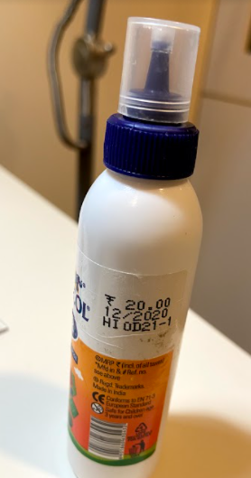
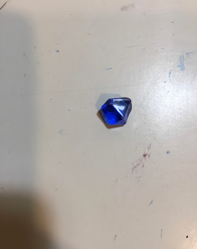

Case Study 
Test Image - 
Output on: Microsoft Azure- a bottle with a blue toothbruh
Output on: Mobilenet Model- hairspray
Results -
Microsoft Azure is more accurate
Test Image -
Output on: Microsoft Azure- a knife
Output on: Mobilenet Model- letter opener
Results -
Microsoft Azure is more accurate
Test Image - 
Output on: Microsoft Azure- close up of a human
Output on: Mobilenet Model- light
Results -
Mobilenet Model is more accurate
Test Image -
Output on: Microsoft Azure- a sign hanging from a wall
Output on: Mobilenet Model- spot
Results -
Microsoft Azure is more accurate
Test Image -